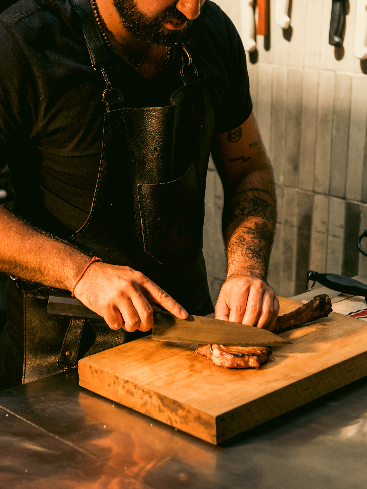
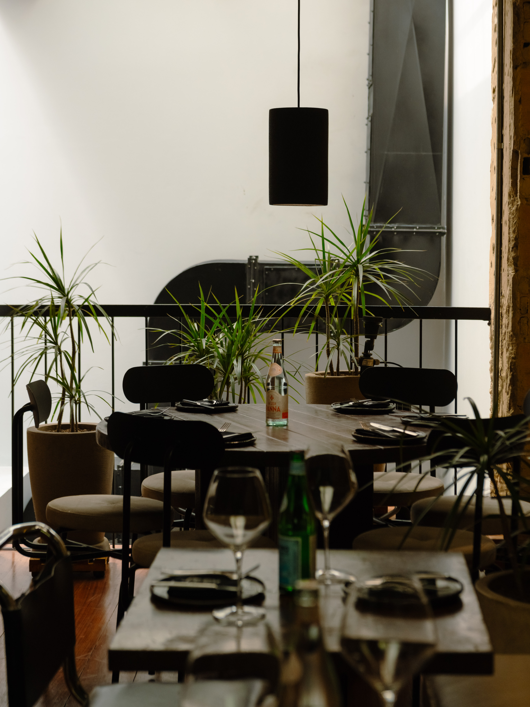

Producto
Carnes y cava
Maduraciones, cortes y una selección pensada para comensales que aprecian la precisión.
La experiencia
Esta página concentra el relato del restaurante con más espacio, menos ruido y una lectura más elegante. Aquí vive la esencia, no en la home.

Producto
Maduraciones, cortes y una selección pensada para comensales que aprecian la precisión.
Técnica
El fuego como lenguaje visual y culinario: control, temperatura y profundidad.
Servicio
Una mesa bien atendida, con ritmo, calidez y una sensación de ocasión.

Carácter
Reducimos la saturación de texto y dejamos que la fotografía, el ritmo y la navegación construyan una sensación más cercana a un restaurante de alta cocina.